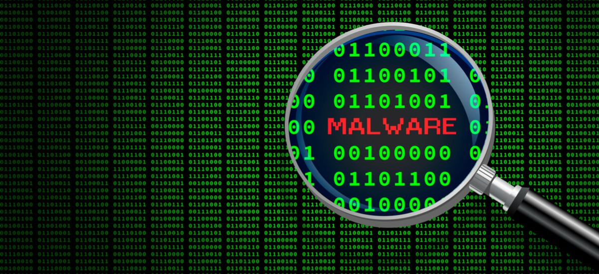

ROZDELENIE POČÍTAČOVÝCH VÍRUSOV
1. Súborové vírusy
Tieto vírusy napádajú spustiteľné súbory (.exe, .bat, .com) a aktivujú sa pri ich spustení. Ich cieľom je zmeniť alebo zničiť obsah súboru, alebo infikovať ďalšie súbory v systéme.
2. Boot vírusy
Infikujú zavádzací sektor pevného disku alebo disketu. Aktivujú sa pri štarte počítača, ešte pred načítaním operačného systému. Ich odstránenie býva náročné a často vyžaduje formátovanie disku.
3. Makrovírusy
Šíria sa prostredníctvom dokumentov (napr. Word, Excel), ktoré obsahujú makrá. Pri otvorení infikovaného dokumentu sa vírus automaticky aktivuje a môže sa šíriť ďalej.
4. Sieťové vírusy
Tento typ vírusov sa šíri prostredníctvom počítačových sietí, najmä internetu. Môžu infikovať e-maily, prehliadače alebo využiť bezpečnostné diery v systémoch.
5. Červy a trójske kone
Aj keď technicky nejde o vírusy, patria do širšej kategórie škodlivého softvéru. Červy sa šíria samostatne, zatiaľ čo trójske kone sa tvária ako neškodné programy, no v skutočnosti obsahujú škodlivý kód.
| Škody a dopady | Prevencia a ochrana |
Zdroje:
Amcef.com: Vírusy v počítači
Itcomplet – Typy vírusov
Websupport: Ako sa chrániť pred PC vírusmi
Zaujimavysvet.sk - Typy vírusov